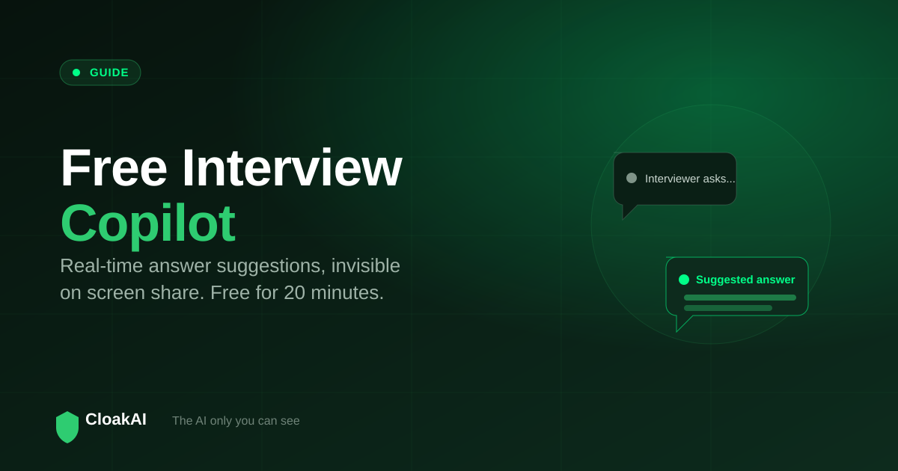
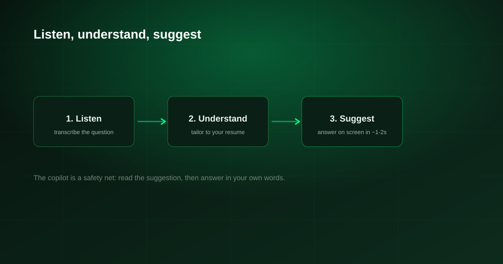

"Interview copilot" has become the popular name for a tool that sits alongside your interview and suggests answers in real time. The trouble is that most tools using the label are paid, browser-based, or both. If you are looking for a free interview copilot that actually works when it matters, this guide explains what a copilot really is, what "free" should mean, and how to choose one that stays invisible on your screen share.
An interview copilot listens to the interviewer and shows you suggested answers live. Most "free" copilots are limited trials of browser tools. CloakAI gives you a genuinely free 20-minute copilot session with full features, runs as a native app that is invisible on screen share, and then charges only for the hours you use from ₹499 rather than a monthly subscription.
What Is an Interview Copilot?
An interview copilot is a real-time assistant for a live interview. It transcribes the interviewer's questions, understands them, and shows you a suggested answer on your screen within a second or two. Good ones personalise the answer to your resume, so the suggestions sound like you rather than a generic script. Think of it as a co-pilot: you are still flying the interview, but you have support when a question catches you off guard.
What "Free" Should Actually Mean
Plenty of tools say "free" and mean a stripped-down demo, or a free tier that does not include the live copilot you actually need. When you evaluate a free interview copilot, insist on three things:
- Full features in the free window. A trial that disables the real-time copilot tells you nothing. CloakAI's 20-minute trial includes the real thing.
- No card up front. You should be able to test it without entering payment details.
- Honest limits. Free should be a real slice of the product, not bait for a subscription you cannot evaluate.

New here? Try every feature free for 20 minutes, no signup and no card needed.
Try CloakAI for free 20-minute free trial · No credit card required · Windows 10 & 11The Feature That Separates Copilots: Invisibility
Every copilot suggests answers. The one that keeps you safe is the one the interviewer cannot see. Browser-based copilots run in a tab or window that your screen share can capture, so they can appear at the worst moment. A native copilot with OS-level content protection is excluded from the screen-share stream entirely. This is the single biggest difference between copilots, and it is worth more than any extra feature.
| What you want | Typical "free" copilots | CloakAI |
|---|---|---|
| Real-time answer suggestions | ✓ | ✓ |
| Full features while free | ⚠ Often limited | ✓ 20 min full |
| No credit card to try | ⚠ | ✓ |
| Invisible on screen share | ✗ Browser | ✓ Content protection |
| Answers personalised to your resume | ⚠ | ✓ Deep |
| Pay-per-use, no subscription | ✗ Monthly | ✓ From ₹499 |
A copilot that can be seen on your screen share is not a copilot, it is a liability. Invisibility is the feature, everything else is table stakes.
Not ready to buy? Test every one of those features free for 20 minutes first.
Try CloakAI for free 20-minute free trial · No credit card required · Windows 10 & 11How to Use an Interview Copilot Well
A copilot works best as a safety net, not a script. Read the suggestion, then answer in your own words and with your own examples. Keep your eyes natural, avoid long silent pauses while you read, and use the copilot to recover from surprise questions rather than to recite every answer. Practise with it once or twice before a real interview so the rhythm feels natural. Used this way, it lifts your confidence without making you sound like you are reading.
Final Verdict
A free interview copilot is worth having, but only if "free" includes the real-time feature and the copilot stays invisible on screen share. CloakAI delivers both: a genuinely free 20-minute session with full features, native invisibility through content protection, resume-personalised answers, and pay-per-use pricing after the trial. Try it free before your next interview and see what a real copilot feels like.
Line it up for your next interview and try the whole thing free for 20 minutes.
Try CloakAI for free 20-minute free trial · No credit card required · Windows 10 & 11